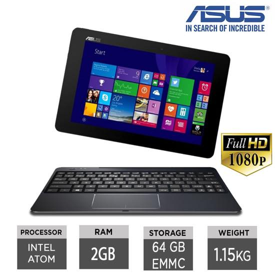

아이맥 + 맥북프로 조합에서
한국웹을 이용할려면 절대적으로 윈도우 랩탑이 필요하단걸 깨닫고 -_-;;
맥북프로 + 윈도우 랩탑 + 서브 모니터 (23인치) 시스템으로 변경할려고 한국서 아이맥을 팔고 왔는데
윈도우 랩탑을 고르자니 종류가 느므 많은것......OTL
걍 간단히 £200 이하로 인터넷 + 문서 + 드라마 감상이 주 목적인데
사람맘이 그래도 돈주고 사는거 적당한 가격에 잘샀다는 만족감을 얻고 싶지 않겠습니까 ;ㅂ;
검색에 검색을 거듭한 끝에 아수스 T100chi 로 정하고 주문했는데
배송받아보니 전원이 안들어와..........OTL
검색해보고 고객센터 전화통화 해보니 8시간 이상 충전한 후에 다시 시도해 보라는데
8시간 지나도 전원이 안들어와.........OTL
주말에 가뿐하게 파일 이동시키고 배위에 올려놓고 드라마좀 보려했던 나의 계획이이이이이 ;ㅂ;
문의멜은 보내놨지만 어짜피 주말이라 월욜까지 다시 기다려야함
물건이 불량이면 다시 리턴 시키고 교환받거나 아님 환불처리 하면 되지만
말은 간단하지만 또다시 저 일을 진행시키고 기다리고 다시 테스트 할려고 생각하니 느므 성질이 난다 (<-성격급함;;)
으으;; 아니 왜 새제품이 전원이 안들어오는거야;; 왜;;
배터리를 분리했다가 다시 끼운다음 시도해보란 글도 있었고 <- 이건 겁나서 못함
전원 + 사운드 (down) 버튼 동시에 누르라는 사람 / 전원 + 윈도우 버튼 동시에 누르라는 사람
이것저것 글이 많았는데;; 모두 실패;;
;ㅂ;
으으;; 기다리는거 싫어효;;;;; 찡얼찡얼